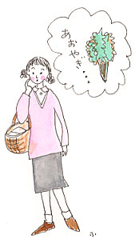
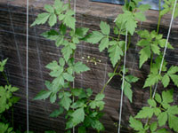

|
■あおやぎ奥さん
「あなた、食べたいものはない？」
結婚したばかりのころ、友人は夫に尋ねてみたという。それが夢だった。結婚といえば、この科白、と少女のころから考えていた。夫はうーん、と唸ったあと、
「あおやぎが食べたい」
と答えたそうな。
（あおやぎって、何だろう）
彼女はあおやぎの正体も所属も知らなかったが、夫には聞けなかった。買物かごを下げて歩きながら「あおやぎ、あおやぎ」とくり返し唱えていたら、あおやぎって野菜なんだわ、という気がしてきた。八百屋のおじさんに、
「あおやぎ、ください」
と言ったら、
「あおやぎ、うちにはないよ。あっはっは」
と大きな声で笑ったあと、道の向こうを指さした。指さす先には魚屋さん。
（あおやぎって、あおやぎって……）
恥かしさをこらえて道をわたり、魚屋へ。するとケースのなかに「あおやぎ」と札を抱いた経木の船がならんでいた。なかに、オレンジ色の何やら平たいものがいくつも重なっている。
「あおやぎって、貝、なの？」
「そうですよ、何だと思ってたんですか？」
「菜っ葉」
以来、彼女は八百屋と魚屋だけでなく、商店街のあちらこちらで、「あおやぎ奥さん」と呼ばれるようになった。それから40年がたった、いまでも。ね、いい話でしょ。
あおやぎ奥さんに、尋ねてみる。
「それで、あおやぎはお刺身で？」
「ううん、ぬたにしたんだったと思うわ」
ぬた。ぬたといえば、甘酢と味噌を合わせてつくる、酢味噌和えのことだ。
そういえば私にも、ぬたには思い出がある。
「これ、ぬたというのよ。食べてみてね」
10年前のあの日、子どもに初めてぬたを食べさせた。筍、わかめ、烏賊を酢味噌で和えてつくったのだった。当時４歳だったまんなかの子が、一口食べたあとで箸を置き、「ごめんね、これ、もう食べられない。だけど、もう少し大きくなったら、きっと好きになるからね」
と言った。
（この子がそう言うのなら、好きになるのを待つことにしよう）
私には、子どもが食べず嫌いをしているとも、わがままを言っているとも思えなかったのだ。ぬたを供してからというもの、子どものうちの誰が「これ、食べられない」と言っても、「あらそう、いつか好きになるといいね」と言うにとどめてきた。食に対する子どもの反応には、いろいろな信号が隠されている。食を担当する者が、子どもに媚びる必要はないけれども、食卓を通して子どもの信号を受けとめることが、親と子のもっとも切実な、ということは手がかりになるやりとりではないだろうか。好き嫌いはいけない、と叫んだり、食べ残している子どもをじっと睨んだりすることも、時にはいいかもしれないが、それを食べないわけ、好きでないわけを考えると、その子の「いま」が見えてくることもある。お腹が痛いことがわかるなんていうこともそのうちだし、初めて口にするものにたじろぐ癖から慎重な一面を発見するということもあるのではないか。
４人の娘息子を育て上げたお母さんが、こんなに興味深いはなしをして聞かせてくれたことがある。
「４人のなかでは２番めの娘が、人間関係や新しい環境に馴染みにくかったけれど、この子の食べ方を見て、それは覚悟していたの。とにかく食べられないものが多くてね。でも大きくなってからは、自分の道を迷いなく歩いているかしらね。食べ方の癖って、その子を語っているのよぉ」

■あおやぎと分け葱のぬた
あおやぎ…………………………………150g
分け葱………………………………………１本
酢……………………………………………少々
〈酢味噌〉
白味噌…………………………………大さじ５
酢………………………………………大さじ２
砂糖…………………………………大さじ1.5
・分け葱は３cmくらいの長さに切り、熱湯でさっと茹でて水を切る。
・あおやぎもさっと茹で、冷水にとってさまし、水を切る。
・分け葱とあおやぎに酢を少量ふりかけておく。
・酢味噌で和える。
※酢味噌の塩分が材料の水気をひきだすので、食卓に出す直前に和えること。
※白味噌に赤味噌を加えたり、少量の辛子を混ぜても美味しい。微妙な味の変化がものをいう。

|